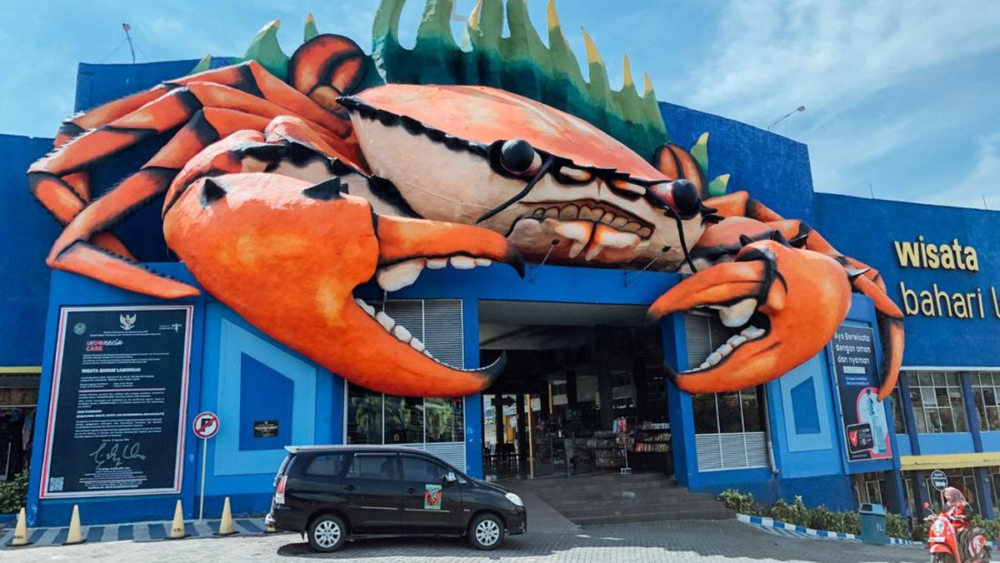

Lamongan
Megilan

Pantai Kutang
Lamongan

Soto Lamongan
Soto dengan koya khas Lamongan
Kabupaten Lamongan memiliki sejarah panjang
yang dimulai sejak era Kerajaan Majapahit, di mana wilayah ini
menjadi bagian penting dari kerajaan tersebut hingga masa
Kesultanan Demak dan Mataram. Salah satu tokoh penting dari
Lamongan adalah Sunan Drajat, anggota Wali Songo yang berperan
besar dalam penyebaran Islam di Jawa. Pada masa kolonial,
Lamongan dikuasai oleh Belanda dan menjadi pusat perdagangan
hasil bumi. Selama perjuangan kemerdekaan, rakyat Lamongan turut
berperan dalam mempertahankan kemerdekaan Indonesia. Kini,
Lamongan dikenal dengan kekayaan kulinernya seperti Soto
Lamongan dan potensi wisata bahari, serta terus berkembang di
berbagai sektor ekonomi dan infrastruktur.
Lamongan melahirkan sejumlah tokoh penting yang berpengaruh
dalam berbagai bidang. Salah satu yang paling terkenal adalah
Sunan Drajat, anggota Wali Songo yang berperan
besar dalam penyebaran Islam di Jawa dengan pendekatan yang
mengedepankan pendidikan, seni, dan sosial kemasyarakatan.
Selain itu, meskipun bukan asli Lamongan,
Laksamana Keumalahayati dari Aceh memiliki
keterkaitan sejarah dengan jalur perdagangan yang melewati
Lamongan pada masanya. Di bidang keagamaan,
KH. Ma’ruf Khozin adalah ulama asal Lamongan
yang turut berperan dalam pengembangan organisasi Islam
Nahdlatul Ulama (NU) di Jawa Timur. Dalam politik,
Fadeli, mantan Bupati Lamongan, juga berjasa
dalam memajukan pembangunan infrastruktur dan mengembangkan
sektor ekonomi, termasuk pariwisata dan kuliner, sehingga
membuat Lamongan semakin dikenal luas. Tokoh-tokoh ini
berkontribusi signifikan dalam sejarah, agama, dan kemajuan
daerah Lamongan.
Kabupaten Lamongan terletak di Provinsi Jawa Timur,
tepatnya di bagian utara Pulau Jawa. Wilayah ini berbatasan
dengan Laut Jawa di sebelah utara, Kabupaten Gresik di sebelah
timur, Kabupaten Mojokerto dan Kabupaten Jombang di sebelah
selatan, serta Kabupaten Bojonegoro dan Kabupaten Tuban di
sebelah barat. Letaknya yang strategis di pesisir utara
menjadikan Lamongan sebagai pusat aktivitas ekonomi,
perdagangan, dan perikanan, yang turut berperan dalam
perkembangan wilayah sekitarnya.